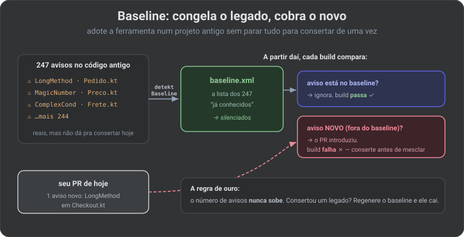

🔬 Afinando o controle de qualidade: Lint, Detekt & Sonar sob medida (2026)
No artigo 10 você ligou as ferramentas de qualidade na esteira e viu o Quality Gate barrar um PR. Mas nas configurações-padrão elas ou reclamam demais (afogam o time em avisos irrelevantes) ou de menos (deixam passar o que importa). Este artigo é sobre o meio-termo: configurar cada peneira para pegar o que o seu projeto considera erro — nem mais, nem menos.
🔗 Fio condutor: o 06 respondeu “o que é cada ferramenta e como ligo na esteira”. Aqui respondemos “como faço ela concordar com as regras do meu time” — e como adotá-la num projeto legado sem parar tudo para consertar 5 anos de dívida.
Quem pega o quê (divisão de trabalho)
As quatro ferramentas não competem — cada uma é uma peneira com uma malha diferente. Configurar bem começa por saber qual regra mora em qual peneira.
![Quatro peneiras em sequência pelas quais o código passa: ktlint/Spotless (formatação: indentação, imports, espaçamento — conserta sozinho com --format), Detekt (code smell de Kotlin: função gigante, complexidade, !! perigoso — aceita regras custom via detekt.yml), Android Lint (regras de Android: API sem checar versão, acessibilidade, permissão inútil — configurável via lint.xml) e Sonar (o portão do time: junta tudo, histórico, cobertura, duplicação, Quality Gate). Rodapé: a severidade info/warning deixa o build passar; error para a esteira, e warningsAsErrors transforma todo aviso em erro.](../assets/qualidade-camadas.svg)
🧠 Termo — severidade: o “peso” de cada aviso:
info,warningouerror. Sóerrorderruba o build. Configurar qualidade é, em boa parte, decidir a severidade de cada regra — promover a erro o que importa, rebaixar a aviso o que é gosto.
Parte 1 · ktlint / Spotless (formatação)
Formatação não é opinião a se discutir em PR — é para o robô resolver. O ktlint aplica o estilo oficial do Kotlin; o Spotless é um guarda-chuva que roda ktlint (e outros) e ainda conserta o arquivo.
// build.gradle.kts (raiz)
plugins { id("com.diffplug.spotless") version "6.25.0" }
spotless {
kotlin {
target("**/*.kt")
ktlint("1.3.1")
trimTrailingWhitespace()
endWithNewline()
}
}
./gradlew spotlessApply # CONSERTA a formatação (rode antes de commitar)
./gradlew spotlessCheck # só VERIFICA (é o que roda na esteira; falha se estiver torto)
🔒 Visão Specialist: ligue o
spotlessApplynum hook de pré-commit (com o Gradle +pre-commitou um script em.git/hooks). Assim o código já sai formatado do seu PC e a esteira nunca reprova por vírgula fora do lugar — a checagem vira uma rede de segurança, não um obstáculo diário.
Parte 2 · Detekt (code smell de Kotlin)
O Detekt olha a estrutura do seu Kotlin: funções longas demais, complexidade alta, aninhamento profundo, !! arriscado. Tudo vive num arquivo detekt.yml — cada regra tem active e limiares.
# config/detekt/detekt.yml — só o que você MUDA em relação ao padrão
complexity:
LongMethod:
active: true
threshold: 60 # linhas; acima disso, reclama
CyclomaticComplexMethod:
threshold: 15
style:
MagicNumber:
active: true
ignoreNumbers: ['-1', '0', '1', '2'] # esses são óbvios, não reclame
MaxLineLength:
maxLineLength: 120
potential-bugs:
UnsafeCallOnNullableType:
active: true # o !! perigoso — mantenha ligado
build:
maxIssues: 0 # 0 = qualquer issue derruba o build
// build.gradle.kts (módulo :app)
plugins { id("io.gitlab.arturbosch.detekt") version "1.23.7" }
detekt {
config.setFrom("$rootDir/config/detekt/detekt.yml")
buildUponDefaultConfig = true // parte do padrão e só sobrescreve o que você declarou
}
Silenciar um caso pontual
Às vezes a regra está certa 99% das vezes, mas naquele ponto o código é assim de propósito. Suprima local e justificado, nunca a regra inteira:
@Suppress("MagicNumber") // 3600 = segundos numa hora, valor de domínio
fun horaEmSegundos() = 3600
Escrever uma regra sua
Detekt permite regras custom — úteis para padrões do próprio time (“nenhum import de android.util.Log; use nosso Logger”). Você estende Rule, registra num RuleSetProvider e o Detekt passa a aplicá-la como qualquer outra. É o pulo do gato para transformar convenção verbal em regra automática.
Parte 3 · Android Lint (regras da plataforma)
O Lint já vem no AGP e conhece o Android: uso de API acima do minSdk sem checagem, contentDescription faltando (acessibilidade), permissão declarada e não usada, recurso órfão. Você o afina no bloco lint {} e num lint.xml.
// build.gradle.kts (módulo :app)
android {
lint {
warningsAsErrors = true // rígido: todo warning derruba o build
abortOnError = true
checkDependencies = true // varre também os módulos de biblioteca
baseline = file("lint-baseline.xml")
disable += "TypographyFallbacks" // regras que você decidiu não seguir
fatal += "StopShip" // TODO/FIXME de "não suba isso" viram fatais
}
}
<!-- lint.xml — severidade por issue, com precisão cirúrgica -->
<lint>
<issue id="HardcodedText" severity="error" />
<issue id="ContentDescription" severity="error" />
<issue id="IconDensities" severity="ignore" />
</lint>
⚠️ Pegadinha:
warningsAsErrors = truenum projeto que já existe vai explodir com centenas de erros no primeiro build. Não desligue a regra — gere um baseline (Parte 5) e comece do zero a partir de hoje.
Parte 4 · Sonar (o portão do time)
Lint e Detekt vivem em cada máquina. O Sonar é o servidor que junta tudo, guarda o histórico e aplica o Quality Gate que barra o PR (artigo 10). Configurar aqui é dizer o que o Sonar analisa e de onde ele lê a cobertura.
// build.gradle.kts (raiz)
sonar {
properties {
property("sonar.projectKey", "org_nexushub")
property("sonar.organization", "org")
property("sonar.host.url", "https://sonarcloud.io")
// NÃO analise código gerado nem testes como se fosse produção
property("sonar.exclusions", "**/build/**,**/*_generated*,**/databinding/**")
property("sonar.coverage.exclusions", "**/di/**,**/*Application.kt,**/ui/theme/**")
// de onde vem a cobertura (o relatório que o Kover gerou)
property(
"sonar.coverage.jacoco.xmlReportPaths",
"$buildDir/reports/kover/report.xml"
)
}
}
🧠 Termo — cobertura de código: a fatia das linhas que os testes de fato executam. O Kover (ou Jacoco) mede e gera um XML; o Sonar lê esse XML e mostra no painel. Sem esse caminho configurado, o Sonar reporta 0% de cobertura mesmo que você tenha testes — um susto comum.
Desenhando o seu Quality Gate
Na interface do Sonar você define as regras do portão. Um gate sensato para começar:
| Condição (no código novo) | Valor | Por quê |
|---|---|---|
| Cobertura | ≥ 80% | o que o PR adiciona precisa vir testado |
| Linhas duplicadas | ≤ 3% | copiar-colar apodrece rápido |
| Bugs / Vulnerabilidades novas | 0 | não introduza problema conhecido |
| Security Hotspots | 100% revisados | alguém olhou os pontos sensíveis |
🔒 Visão Specialist: mire o Quality Gate “em código novo” (o gate Clean as You Code), não no projeto inteiro. Exigir 80% de cobertura sobre 5 anos de legado congela o time; exigir sobre o que muda hoje faz a qualidade subir a cada PR sem drama. É a mesma filosofia do baseline, a seguir.
Parte 5 · Baseline: adotar sem parar o mundo
O maior obstáculo de ligar essas ferramentas num projeto que já existe: o primeiro build cospe centenas de avisos reais. Consertar tudo antes de mesclar qualquer coisa é inviável. A saída é o baseline: uma foto dos problemas atuais, que a ferramenta passa a ignorar — cobrando só o que for novo.

# Detekt: fotografa os problemas de hoje em um baseline
./gradlew detektBaseline # gera config/detekt/baseline.xml
# Android Lint: o mesmo para as regras de Android
./gradlew updateLintBaseline # gera lint-baseline.xml
Você versiona esses arquivos. A partir daí, todo aviso já listado fica quieto; qualquer aviso novo derruba o build. A dívida antiga não some sozinha, mas também não cresce — e some aos poucos, à medida que você mexe nos arquivos e regenera o baseline.
⚠️ Pegadinha: baseline não é lixeira. Se você regenera o baseline toda vez que aparece um aviso novo (só para o build passar), a ferramenta vira enfeite. Regenere só quando você consertou algo e quer que o baseline encolha.
✅ Checklist para o NexusHub
| Item | Ação |
|---|---|
| Formatação | Spotless/ktlint com spotlessApply em hook de pré-commit |
| detekt.yml | Um único arquivo na raiz, buildUponDefaultConfig = true, maxIssues: 0 |
| Supressão | @Suppress local com comentário justificando — nunca desligar a regra global |
| lint.xml | Severidade por issue; warningsAsErrors + baseline no legado |
| Cobertura | Kover gerando XML e o caminho apontado em sonar.coverage.jacoco.xmlReportPaths |
| Exclusões Sonar | Tirar código gerado e DI da análise/cobertura |
| Quality Gate | “Clean as You Code” — regras sobre o código novo, não o legado |
| Baseline | Gerado e versionado; regenerado só ao consertar, nunca para calar |
📖 Glossário-relâmpago
| Termo | Em uma linha |
|---|---|
| severidade | O peso do aviso: só error derruba o build. |
| ktlint / Spotless | Formatador de Kotlin que também conserta o arquivo. |
| detekt.yml | Onde você liga/desliga regras e ajusta limiares do Detekt. |
| buildUponDefaultConfig | Parte das regras padrão e só sobrescreve o que você declara. |
| regra custom | Regra sua (Detekt) que vira convenção do time em código. |
| lint.xml | Define a severidade de cada issue do Android Lint. |
| warningsAsErrors | Transforma todo aviso em erro (rígido de propósito). |
| cobertura | Fatia das linhas que os testes executam (Kover/Jacoco). |
| Quality Gate | As regras que o código novo cumpre para poder mesclar. |
| Clean as You Code | Cobrar qualidade só do que muda, não do legado. |
| baseline | Foto dos problemas atuais que a ferramenta passa a ignorar. |